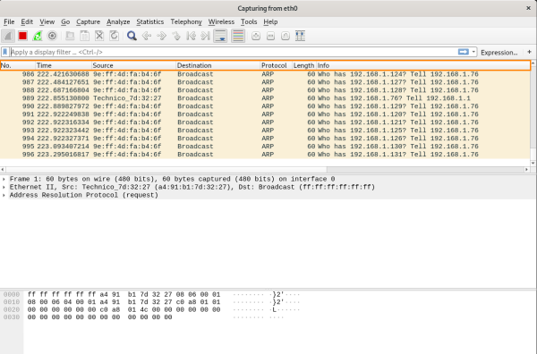
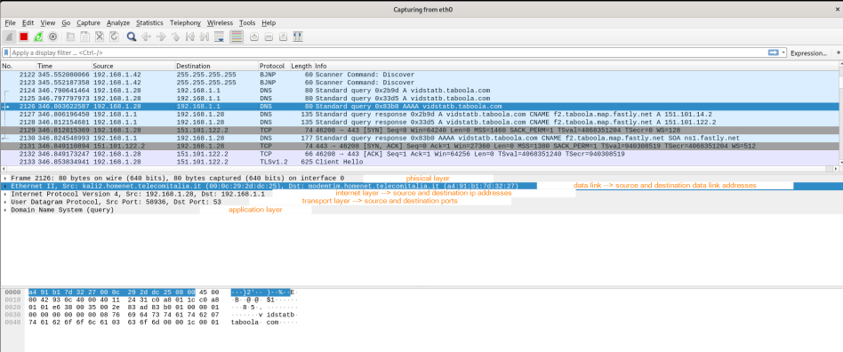
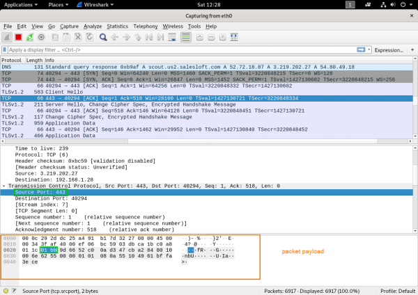

interface
On the interface of wireshark we have 6 columns for every packet transmitted
•
No.: number of the packet captured
•
Time: is the arrival time of the packet. the time is relative to the start of the capture
•
Source: source address (format of the address is protocol dependent), under
view→ name resolution: we can select or unselect the resolve address option
•
Destination: destination address (format of the address is protocol dependent), under
view→ name resolution: we can select or unselect the resolve address option
•
Protocol •
Length: size of the packet
•
info: other informations related the protocol
In the
middle pane there are the
layer protocols used
In the bottom pane there is the packet payload, where we can see evey packet details in hexadecimal representation
